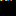
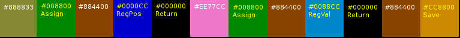

A color is a standard 3-byte RGB color, ranging from #000000 (pure black) to #FFFFFF (pure white).
A color cube is a 16x16x16 grid of colors. Entries from the grid are indexed by color, where red is the X axis, green is the Y axis, and blue is the Z axis. Since the cube is only 16 pixels wide, the lower 4 bits of each color are ignored for this. (For example, any color between #102030 and #1F2F3F addresses the same pixel - the one 1 across, 2 down, and 3 in. By convention, we would call this pixel #112233.)
On disk, we store color cubes in the GIF file format: 16x16 pixel images, with the Z axis being represented by 16 frames.
Aside from the program itself, the interpreter maintains two important pieces of state -
Current Color: this is initially #000000 (black), but instructions can change it. Most instructions use the current color in some way.
Registers: In GifScript you have access to 4096 registers (16x16x16), identified (you guessed it) by color. Each register points to a specific pixel within a specific color cube. Initially, each one points to position #000000 of its own unique pure black color cube, but you can load new cubes for them to point to, or make them point to each other's cubes.
One thing worth noting - at any given moment, one of the registers is the "running" register, and it points to the pixel that the interpreter will read next. By default, that's register #FFFFFF. In other words, when GifScript starts, register #FFFFFF points to the program cube, and setting its position changes what instruction is be executed next. (in other words, this is a "Goto".)
Each register also has a filename (string) associated with it. By default this is just its color name (for example "ff0000.gif"). This is the filename used when loading and saving that register.
Before we get into the technical specifications, it's probably helpful to work through a simple example  to see how GifScript code hangs together.
GifScript code tends to form into blocks that end with a Return instruction. So for example, the line above contains three blocks. Let's read the first block.
The second block proceeds in a similar way, except that instead of using the Register-Position instruction, it uses Register-Value. The pixel pointed to by register #884400 will be assigned the color #EE77CC, a rather nice pink - much nicer than the boring brown #888833.
In the final block, there are just two instructions. We set the current color to #884400, and then save the color cube of register #884400 as a GIF file. Hence, if you run this program, you should find that it creates a file named "884400.gif", with one pink pixel in the middle of one of its frames:
PS: Why are we using register #884400? No particular reason, except that it's a nice color that's not easily mistaken for any of the instruction colors.
GifScript understands the following 12 special instruction colors:

NB: All the instructions below that "evaluate the right-hand side" do so by executing the right-hand side like a function. In other words, it will run the right-hand side code until it hits a "return" instruction, then go back to evaluate the instruction that was expecting a right-hand side value, and then resume execution after that return instruction.
right-hand-side.pixel = current-color
Evaluate the right-hand side. Write the current color into that pixel's contents. (If that pixel is not assignable, return instead).
right-hand-side.register.call()
Evaluate the right-hand side. That register becomes the running register. (Until it returns). The current color is unaffected.
current-color.register.load(current-color.register.filename)
Load a gif into the selected register.
current-color.register.save(current-color.register.filename)
Save the selected register as a gif.
right-hand-side.register.cube = current-color.register.cube
Evaluate the right-hand side. Make that register point to the current-color register's color cube.
current-color = current-color.register.positionGet the position of the selected register. (Assigning to this value will move the register.)
current color = current-color.register.pixelGet the color pointed to by the selected register. (Assigning to this value will modify the register's color cube.)
current-color = running-register.cube[current-color]Get the selected pixel from the running program. (Assigning to this value will modify the program.)
current-color = modify(current-color)
Deduce a pattern from the next 3 pixels, and apply that pattern to current-color. (See Modifiers.) If the pattern can't be deduced or the result overflows, return instead. Resume execution after those pixels. (The resultant value is not assignable.)
current-color.register.filename = filename
Read the next pixels as a filename. (Interpreting each byte as an ASCII character, and stopping at the first 0 byte). Resume execution after the string.
current-color = next-pixel.
Store the next pixel as the current color. Resume execution after that pixel. (Assigning to this value will modify the program.)
current-color = this-pixel
If the interpreter reads any color other than the 12 above, it simply records that pixel as the current color. (Assigning to this value will modify the program.)
You might have noticed that GifScript has no instructions for supporting basic math functionality such as adding, subtracting, or comparing numbers. That's where the Modify instruction comes in! Each Modify instruction is followed by three colors that illustrate the modification you want to make. Each pair of colors (the first and second, and the second and third) is illustrating a before-and-after transition.
Here we see a simple add modifier, which will add 32 points to the blue channel at each step. If this overflows the blue channel, the modifier fails. (In other words, acts like a Return instruction - this can be a useful building block for logic.)
If you don't want to fail on overflow, show an example of the overflow behaviour you want. In this case we're overflowing into the (full) green channel, which in turn overflows into the red channel. NB: For GifScript to understand your intent, the first two example colors should illustrate an addition that does not overflow, and the third should illustrate the overflow.
Hopefully this shows you the kinds of operations that are possible with modifiers. To be precise, the system understands the following operations, and will try out each of these rules, in this order, for each channel until it finds one that fits the examples it has been given.
| None | The same value as before. |
| Channel | The (old) value from another channel. |
| Constant | Set to a specific value. |
| Invert | 255 minus the old value. |
| Add | Increase (or decrease) by a constant; fail if the value overflows. |
| Wrap Add | Increase (or decrease) by a constant; wrap around if the value overflows. |
| Overflow | Increase or decrease by a constant when another (specific) channel's Wrap Add or Overflow channel overflows. |